One may encounter, in the field of formal languages, the language of balanced strings of brackets
\[\epsilon,\,\texttt{()},\,\texttt{(())},\,\texttt{()()}, \,\texttt{((()))},\,\texttt{(()())},\,...\]
named the Dyck language.
Strings from this language, called Dyck words, having the same length \(2n\) always have a matching set of \(n\) left-brackets and \(n\) right-brackets.
The number of Dyck words of a given length \(n\) is given by the \(n\)th Catalan number, defined as:
\[\begin{align} C_n &= \frac{1}{n+1}{2n \choose n}\\[5pt] &= \frac{1}{n+1}\frac{(2n)!}{n!\,n!}\\[5pt] &= \frac{(2n)!}{(n+1)!\,n!} \end{align}\]
a function on integers \(n \ge 0\), making the rapidly growing series:
+-----+---+---+---+---+----+----+-----+-----+-----
| n | 0 1 2 3 4 5 6 7 ...
+-----+---+---+---+---+----+----+-----+-----+-----
| C_n | 1 1 2 5 14 42 132 429 ...
+-----+---+---+---+---+----+----+-----+-----+-----We are interested in these numbers since Dyck words have a one-to-one mapping on different classes of trees. Being able to count them allows us to rank and unrank—and therefore efficiently serialize (i.e. compress)—tree data structures.
1 Rooted, Ordered Trees
Rooted (as usually expected of trees) and ordered (meaning node order is significant) trees map the most naturally onto Dyck words, by interpreting the nesting of parentheses as parent and children in the tree, with empty sets \(\texttt{()}\) corresponding to leaves.
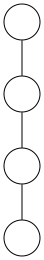 |
|---|
| \[\mathcal{D_3}\texttt{[0]} = \texttt{((()))}\] |
The order of the concatenation of sub-Dyck expression is preserved as order of sibling sub-trees. For \(\mathcal{D_3}\texttt{[1,2,3]}\):
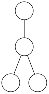 |
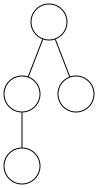 |
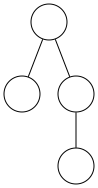 |
|---|---|---|
| \[\texttt{(()())}\] | \[\texttt{(())()}\] | \[\texttt{()(())}\] |
Although every pair of parentheses can be thought of as a node, the root node does not appear as such in the word, but can be thought of as implicit.
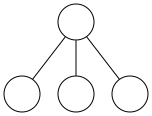 |
|---|
| \[\mathcal{D_3}\texttt{[4]} = \texttt{()()()}\] |
Which gives, for the class of ordered trees of \(n+1\) nodes, a correspondance to Dyck words of length \(2n\), with cardinality given by the Catalan number:
\[|\mathcal{D_n}| = C_n.\]
2 Binary Trees
Binary trees, in the simplest sense, have for each node either a left child, a right child, or both, unless the node is a leaf. This means that we differentiate between a left- or right-child even if that node has no siblings.
This class of trees maps onto non-binary trees (from the previous section) through a so called “left-child right-sibling representation”.
Every first child connection is introduced as a node to the left (or root) of its parent and each successive sibling is introduced as a node to the right (child) of its previous sibling.
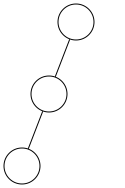 |
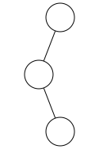 |
|---|---|
| \[\mathcal{D_3}\texttt{[0]} = \texttt{((()))}\] | \[\mathcal{D_3}\texttt{[1]} = \texttt{(()())}\] |
In other words, to get a binary tree from a non-binary tree:
- discard the root node and its edges
- discard all edges besides those going from the first sibling to its parent (left-child)
- connect with an edge every sibling after the first to its previous sibling (right-sibling)
- rotate tree 45° clockwise
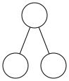 |
|---|
| \[\mathcal{D_3}\texttt{[2]} = \texttt{(())()}\] |
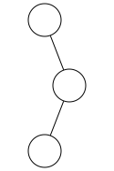 |
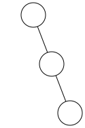 |
|---|---|
| \[\mathcal{D_3}\texttt{[3]} = \texttt{()(())}\] | \[\mathcal{D_3}\texttt{[4]} = \texttt{()()()}\] |
Notice that, since edges in the non-binary tree equivalent corresponds to nodes in this binary representation, we have trees of \(n\) nodes for Dyck words of length \(2n\), with cardinality \(C_n\).
3 Full Binary Trees
Restricting the space to binary trees where every non-leaf node has exactly two children—like expressions built fromt binray operators—we get for a Dyck word of length \(2n\), trees with \(n+1\) leaves, or \(2n-1\) total nodes.
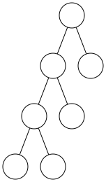 |
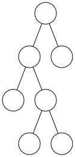 |
|---|---|
| \[\mathcal{D_3}\texttt{[0]} = \texttt{((()))}\] | \[\mathcal{D_3}\texttt{[1]} = \texttt{(()())}\] |
The mapping matches the “left-child right-sibling” representation of the non-full binary trees, except that every node becomes an internal one, leaves getting two children and unsaturated internal nodes becoming saturated.
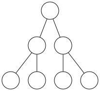 |
|---|
| \[\mathcal{D_3}\texttt{[2]} = \texttt{(())()}\] |
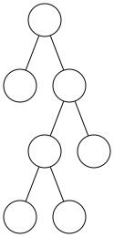 |
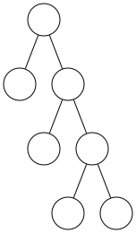 |
|---|---|
| \[\mathcal{D_3}\texttt{[3]} = \texttt{()(())}\] | \[\mathcal{D_3}\texttt{[4]} = \texttt{()()()}\] |
4 Code Length
Code length (or information being the logarithm of the variety, we have for a Dyck word of length \(2n\),
\[\begin{align} I(\mathcal{D_n}) &= \log V(\mathcal{D_n})\\[5pt] &= \log C_n\\[5pt] &= \log \left(\frac{(2n)!}{(n+1)!\,n!}\right)\\[5pt] &= \log ((2n!)) - \log ((n+1)!) - \log (n!) \end{align}\]
which grows on the order of \(O(n)\).
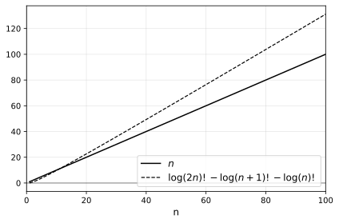